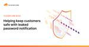

The Cloudflare Blog
https://blog.cloudflare.com
Get the latest news on how products at Cloudflare are built, technologies used, and join the teams helping to build a better Internet.
フィード

How the first 2024 US presidential debate influenced Internet traffic and security trends
The Cloudflare Blog
See how the first 2024 US presidential debate between Biden and Trump influenced Internet traffic patterns, email trends, and heightened cybersecurity concerns across digital platforms
4日前

Supporting Postgres Named Prepared Statements in Hyperdrive
The Cloudflare Blog
Hyperdrive (Cloudflare’s globally distributed SQL connection pooler and cache) recently added support for Postgres protocol-level named prepared statements across pooled connections. We dive deep on what it took to add this feature
4日前

Embedded function calling in Workers AI: easier, smarter, faster
The Cloudflare Blog
Introducing a new way to do function calling in Workers AI by running function code alongside your inference. Plus, a new @cloudflare/ai-utils package to make getting started as simple as possible
4日前

Automatically replacing polyfill.io links with Cloudflare’s mirror for a safer Internet 5
5
The Cloudflare Blog
polyfill.io, a popular JavaScript library service, can no longer be trusted and should be removed from websites
5日前

Cloudflare incident on June 20, 2024
The Cloudflare Blog
A new DDoS rule resulted in an increase in error responses and latency for Cloudflare customers. Here’s how it went wrong, and what we’ve learned
6日前

Helping keep customers safe with leaked password notification
The Cloudflare Blog
To help protect against account compromise via credential stuffing attacks, Cloudflare will notify dashboard users when we detect that a password was found in an external data breach
7日前
Using machine learning to detect bot attacks that leverage residential proxies
The Cloudflare Blog
Cloudflare's Bot Management team has released a new Machine Learning model for bot detection (v8), focusing on bots and abuse from residential proxies
8日前
How the UEFA Euro 2024 football games are impacting local Internet traffic
The Cloudflare Blog
Discover how UEFA Euro 2024 is shifting Internet traffic patterns during games across Europe with insights into traffic drops and cybersecurity concerns during national team games
11日前
Exam-ining recent Internet shutdowns in Syria, Iraq, and Algeria
The Cloudflare Blog
Similar to actions taken over the last several years, governments in Syria, Iraq, and Algeria have again disrupted Internet connectivity nationwide in an attempt to prevent cheating on exams. We investigate how these disruptions were implemented, and their impact
11日前
Patrick Finn: why I joined Cloudflare as VP Sales for the Americas
The Cloudflare Blog
Patrick S. Finn is joining Cloudflare as Vice President of Sales in the US, Canada, and Latin America
12日前
Introducing Stream Generated Captions, powered by Workers AI
The Cloudflare Blog
With one click, users can now generate video captions effortlessly using Stream’s newest feature: AI-generated captions for on-demand videos and recordings of live streams
12日前

Celebrating 10 years of Project Galileo
The Cloudflare Blog
Ten years ago today, Cloudflare launched Project Galileo, a program which today provides security services, at no cost, to more than 2,600 independent journalists and nonprofit organizations around the world supporting human rights, democracy, and local communities
20日前
Heeding the call to support Australia’s most at-risk entities
The Cloudflare Blog
Heeding the call for industry to step up support of Australia's most at-risk entities, Cloudflare and CI-ISAC are teaming up to help protect Australia’s General Practitioner clinics
21日前
Exploring the 2024 EU Election: Internet traffic trends and cybersecurity insights
The Cloudflare Blog
The 2024 EU Parliament election caused declines in Internet traffic during voting and spikes during results announcements, with persistent cyber threats targeting government sites
22日前
Internet insights on 2024 elections in the Netherlands, South Africa, Iceland, India, and Mexico
The Cloudflare Blog
2024 brings a global increase in election activity. Here, we highlight traffic and cyberattack trends witnessed in countries like the Netherlands, South Africa, Iceland, India, and Mexico. Additionally, we provide an up-to-date 2024 Election Insights report on Cloudflare Radar
24日前
Dutch political websites hit by cyber attacks as EU voting starts
The Cloudflare Blog
The 2024 European Parliament election began in the Netherlands on June 6. Cloudflare mitigated several multi-hour DDoS attacks on Dutch political websites on June 5 and 6
25日前
Protecting vulnerable communities for 10 years with Project Galileo
The Cloudflare Blog
In celebration of Project Galileo's 10th anniversary, we want to give you a snapshot of what organizations that work in the public interest experience on an everyday basis when it comes to keeping their websites online
1ヶ月前
European Union elections 2024: securing democratic processes in light of new threats
The Cloudflare Blog
Between 6 and 9 June 2024, hundreds of millions of EU citizens will be voting to elect their members of the European Parliament (MEPs). All EU member states have different election processes, institutions and methods, and the security risks are significant
1ヶ月前
Adopting OpenTelemetry for our logging pipeline
The Cloudflare Blog
Recently, Cloudflare's Observability team undertook an effort to migrate our existing syslog-ng backed logging infrastructure to instead being backed by OpenTelemetry Collectors. In this post, we detail the process that we undertook, and the difficulties we faced along the way
1ヶ月前
Extending local traffic management load balancing to Layer 4 with Spectrum
The Cloudflare Blog
Cloudflare is adding support for all TCP and UDP traffic to our local traffic management (LTM) load balancing solution, extending the benefits of LTM to more than just HTTP(S) applications
1ヶ月前
Disrupting FlyingYeti's campaign targeting Ukraine
The Cloudflare Blog
In April and May 2024, Cloudforce One employed proactive defense measures to successfully prevent Russia-aligned threat actor FlyingYeti from launching their latest phishing campaign targeting Ukraine
1ヶ月前
Cloudflare acquires BastionZero to extend Zero Trust access to IT infrastructure
The Cloudflare Blog
We’re excited to announce that BastionZero, a Zero Trust infrastructure access platform, has joined Cloudflare. This acquisition extends our Zero Trust Network Access (ZTNA) flows with native access management for infrastructure like servers, Kubernetes clusters, and databases
1ヶ月前
Expanding Regional Services configuration flexibility for customers
The Cloudflare Blog
Today we're happy to announce expanded capabilities that will allow you to configure Regional Services for an increased set of defined regions to help you meet your specific requirements for being able to control where your traffic is handled
1ヶ月前
AI Gateway is generally available: a unified interface for managing and scaling your generative AI workloads
The Cloudflare Blog
AI Gateway is an AI ops platform that provides speed, reliability, and observability for your AI applications. With a single line of code, you can unlock powerful features including rate limiting, custom caching, real-time logs, and aggregated analytics across multiple providers
1ヶ月前
New Consent and Bot Management features for Cloudflare Zaraz
The Cloudflare Blog
Zaraz Consent Management now supports Google Consent Mode v2 and is compliant with the IAB Europe Transparency and Consent Framework. Zaraz also added Bot Management support for keeping your analytics data clean
2ヶ月前